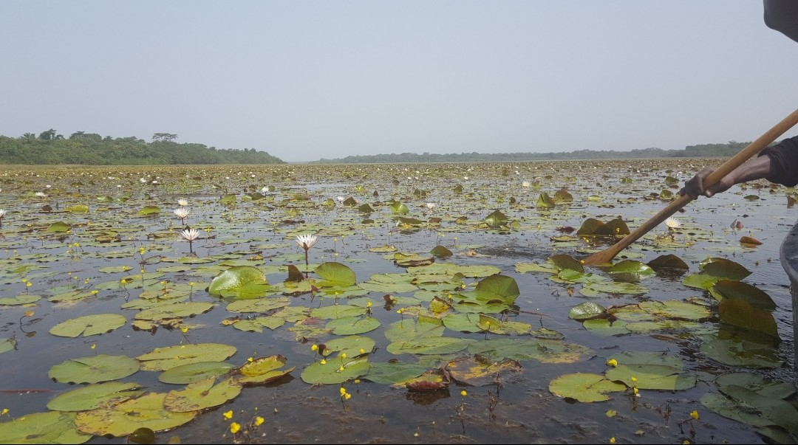
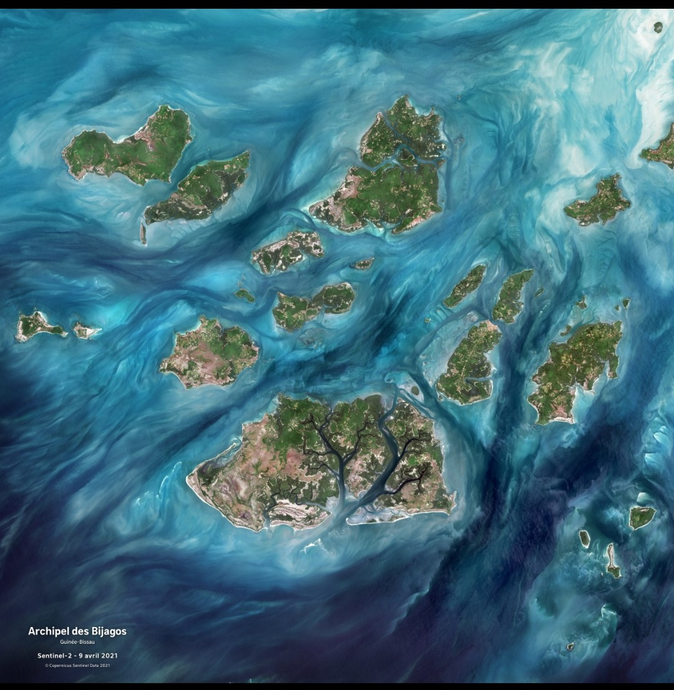
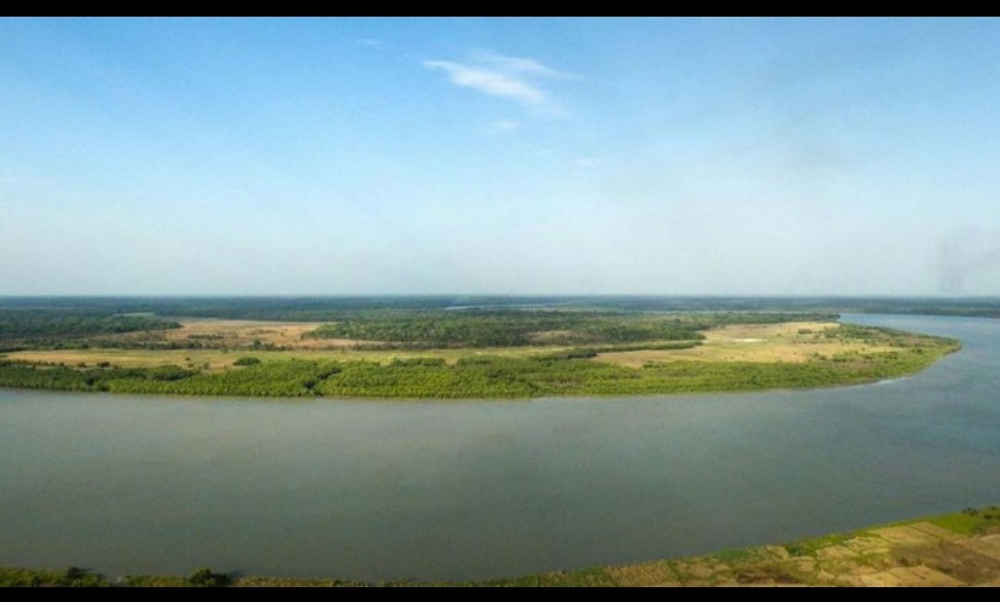
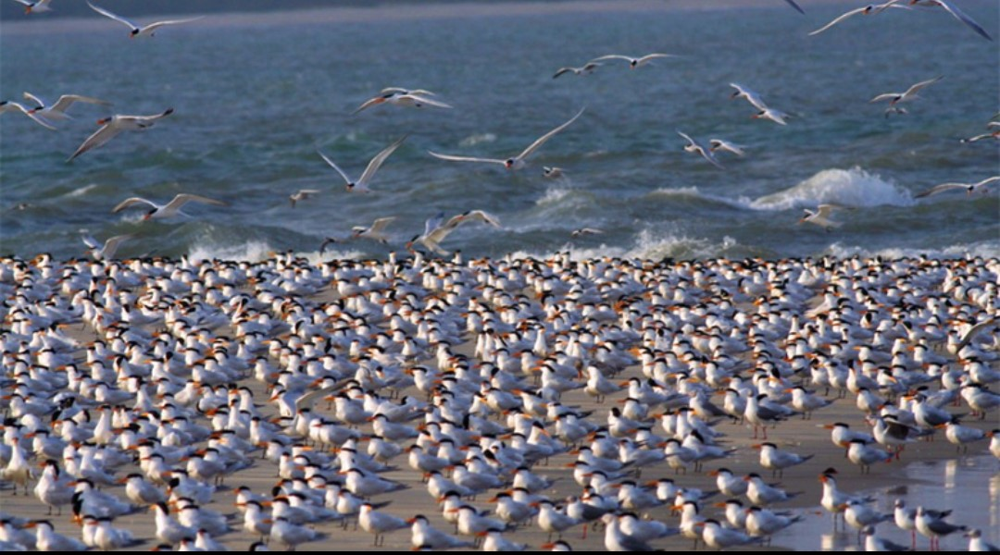

Proteção Ambiental
A conservação da biodiversidade é essencial para
garantir o equilíbrio ecológico e o desenvolvimento sustentável.
A proteção ambiental da Guiné-Bissau é fundamental porque o país abriga uma das biodiversidades mais ricas da África Ocidental, com ecossistemas costeiros, florestais e marinhos de enorme valor ecológico e social. Aqui vai uma explicação clara e completa 👇
🌿 Importância da proteção ambiental


🏞️ Principais áreas protegidas
Arquipélago dos Bijagós – Reserva da Biosfera (UNESCO); tartarugas marinhas, golfinhos e aves migratórias. Parque Natural das Lagoas de Cufada – lagos, hipopótamos, aves e floresta densa. Parque Nacional de Orango – fauna terrestre e marinha, cultura local forte. Parque Natural de Cantanhez – chimpanzés e florestas tropicais.
   ⚠️ Principais ameaças ambientais
Desmatamento para agricultura extensiva e lenha. Pesca ilegal e sobrepesca. Poluição (plásticos, resíduos). Mudanças climáticas: subida do nível do mar e salinização dos solos. Caça furtiva de espécies protegidas. 🛡️ Medidas de proteção ambiental Criação e gestão de áreas protegidas. Leis ambientais e fiscalização (ainda com desafios). Educação ambiental nas comunidades. Apoio de ONGs e parceiros internacionais. Promoção de atividades sustentáveis (ecoturismo, pesca responsável). 👥 Papel da população Preservar florestas e mangais. Evitar caça e pesca ilegais. Reduzir lixo e poluição. Participar em projetos comunitários de conservação.